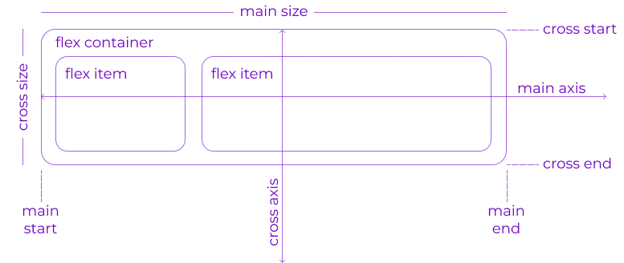

Уроки
Часть 2: Основы и терминология
Поскольку flexbox — это целый модуль, а не одно свойство, он включает в себя множество элементов с набором свойств. Некоторые из них предназначены для установки в контейнере (родительский элемент принято называть «flex контейнер»), в то время как другие предназначены для установки в дочерних элементах (так называемые «flex элементы»).
Если «обычная» компоновка основана как на блочном, так и на inline направлениях, flex layout основана на «направлениях flex-flow». Пожалуйста, посмотрите на этот рисунок из спецификации, объясняющий основную идею гибкого макета.

Элементы будут расположены либо в направлении главной оси (main axis от main-start до main-end) или в направлении поперечной оси (cross axis от cross-start до cross-end).
- main axis — главная ось flex контейнера — это основная ось, вдоль которой располагаются flex элементы. Будьте внимательны, эта ось не обязательна горизонтальная; это зависит от flex-direction свойства (см. ниже).
- main-start | main-end— flex элементы помещаются в контейнер, начиная с main-start и заканчивая main-end.
- main size— ширина или высота flex элемента, в зависимости от того, что находится в основном измерении. Определяется основным размером flex элементов т.е. свойством 'width' или 'height', в зависимости от того, что находится в основном измерении.
- cross axis— ось перпендикулярная главной оси, называется поперечной осью. Её направление зависит от направления главной оси.
- cross-start | cross-end — flex строки заполняются элементами и помещаются в контейнер, начиная от cross-start flex контейнера по направлению к cross-end.
- cross size — ширина или высота flex элемента. В зависимости от css свойства flex-direction, это ширина или высота элемента. Это всегда поперечный размер flex элементов.